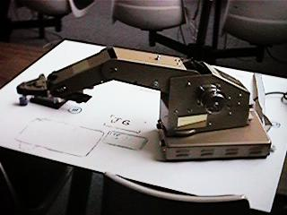
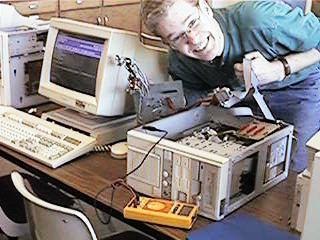

|
Department of Electronics Engineering Technology |
|
Degree Programs
Graduates are prepared for employment as Electronics Engineering Technicians or to transfer into B.S. programs in Electronics Engineering Technology at another university. Students gain knowledge and skills in analog circuits, digital circuits, semiconductors, linear integrated circuits, troubleshooting, RF communications, control systems, and microprocessors. The course content of this Specialized Associate Degree is mostly technical, with fewer general education requirements than the A.A.S. degree. The Electronics Engineering Technology program at Ricks College has been continuously accredited by the Technology Accreditation Commission of the Accreditation Board of Engineering and Technology (TAC/ABET) since 1970. Information about TAC/ABET may be obtained at www.abet.org Specialized Associate Degree -- Computer Systems Technology   |